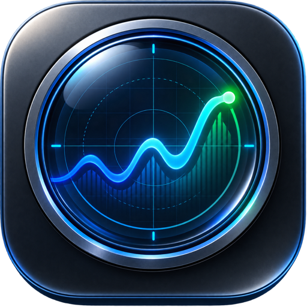
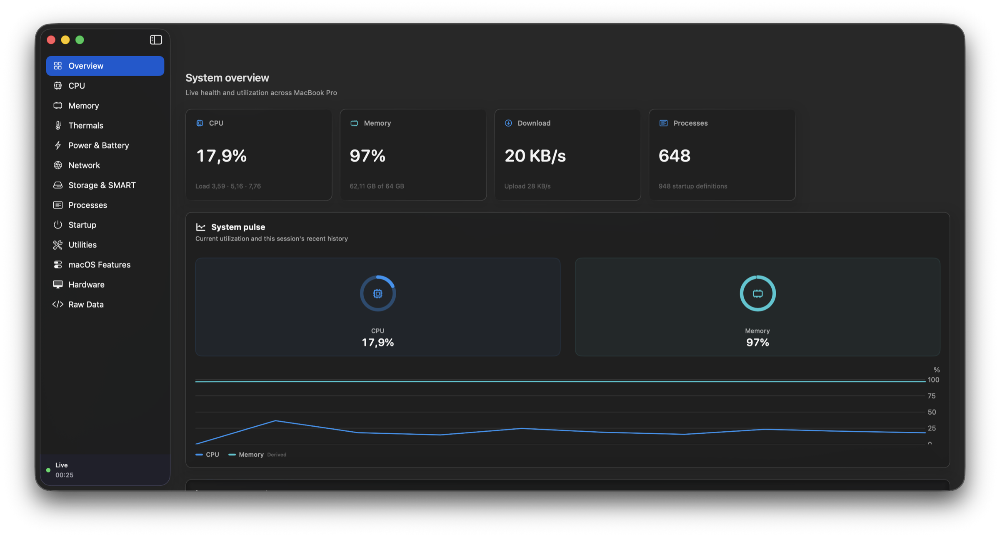
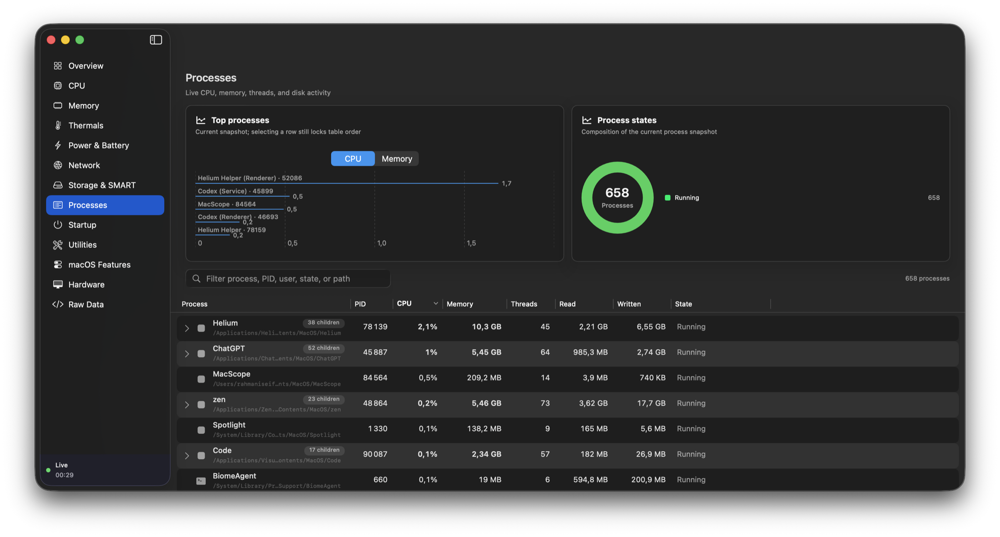
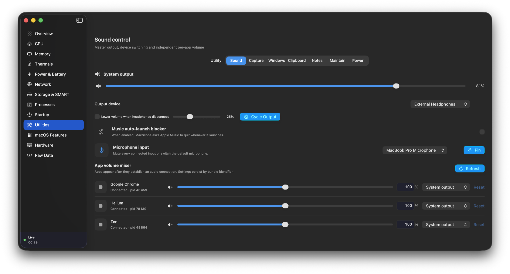
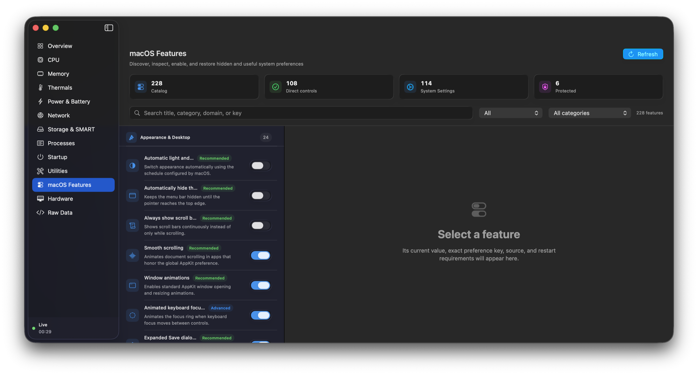

Sound
Switch inputs and outputs, route apps, mix each app from 0–200%, mute microphones, pin an input, and protect volume after headphones disconnect.

MacScopeLive system telemetry, deep process control, and a complete utility belt — built natively for Apple silicon.

01 / NATIVE
Monitoring, control, and the tools you reach for every day — together in a fast, focused macOS app.
02 / MONITOR
Watch CPU, memory, disk, network, thermals, and every running process in one calm, high-density workspace.

03 / UTILITIES
Capture, arrange, switch, clean, automate, and control your Mac without breaking focus.
Independent app audio, output routing, and quick switching. Explore in MacScope

04 / TOOLKIT
Each module is native, local, and optional. Install the bundles you need, remove the ones you do not, and keep audio plus live disk activity always within reach.
Switch inputs and outputs, route apps, mix each app from 0–200%, mute microphones, pin an input, and protect volume after headphones disconnect.
Take timed, window, selection, and scrolling captures; record displays or windows; edit locally; run OCR and QR actions; pick colors; preview the camera.
Arrange halves, thirds, corners, and displays; snap at screen edges; switch exact windows; drag from anywhere; tune mouse and keyboard behavior.
Search opt-in history, expand snippets, strip tracking links, paste plain text, add Finder shortcuts, and park files on a move-later shelf.
Keep named Markdown scratchpads close, move between focused tabs, and automatically clear sensitive working notes after a quiet period.
Review apps and leftovers before Trash, find large downloads and caches, manage Homebrew and app updates, and convert images or edit video.
Keep the Mac or display awake on demand or by rule, adjust supported hardware brightness, apply reversible software dimming, and lock input for cleaning.
Reach the same tools your way

05 / CONTROL
Explore 226 hidden and useful macOS controls, with exact-value undo and clear safety states.
Local by default. Explicit permissions. No invented telemetry.
06 / MACSCOPE
The system monitor and the toolbox, together in one fast, private, native app.
Signed with an Apple Developer ID, notarized by Apple, and stapled for Gatekeeper verification. Requires macOS 14 or newer on Apple silicon.
Read the documentation